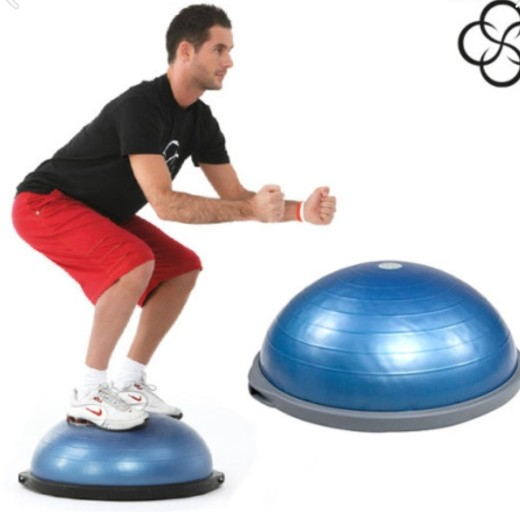
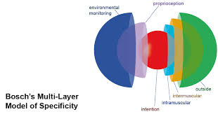

인간이라는 유기체의 삶 전체에서 운동학습을 빼놓는 다는 것은 일어날 수 없는 일이다. 하나의 생명체로써 살아가고 있는 모든 순간이 운동학습과 운동조절의 표현이다.
그렇다면 운동학습은 어떻게 일어나는 것일까? 그리고 그것은 실제로 현장에서 어떻게 사용되고 있는가?
현장에서 하는 재활, 스포츠 선수들이 하는 훈련, 연습프로그램 등은 하나의 학습 상황에서 다른 상황으로 전이된다는 가정을 기초로 한다.
하나의 상황에서 학습된 지식이나 기술, 인지능력, 전략, 개념, 지각 등은 다른 상황으로 전이가 가능하다.
이러한 운동학습의 전이를 만들어 내기 위해서는 훈련 과제와 전이 과제 사이의 유사성에 달려 있다고 얘기한다.(Osgood,1949; Ellis)
내가 학습하고 싶은 과제(100m)와 훈련하는 과제(스쿼트)가 얼마나 유사한가? 에 달려있는 것이다.
여러분이 생각했을 때 100m 달리기와 스쿼트는 얼만큼 유사한가?

위의 사진을 보면 어떠한 생각이 드는가? 고유수용성 감각(proprioception)을 트레이닝 하고 있군 ! 하고 생각이 든다면 당장 주먹으로 자기 머리를 내려치는걸 추천한다.
고유수용성 감각은 불안정한 지면에 올라갔다고 활성화 되지 않는다. 고유수용성 감각은 우리가 보수볼에 올라가있는것도 모른다.
또한 우리가 생활하는 환경은 보수볼 위가 아닌 지면 위에서 생활한다. 보수볼에서 얼마나 균형을 잘 잡던 그게 무슨 의미가 있을까?
운동학습의 과정과 전이의 과정은 눈으로 확인 할 수 없다. 도대체 무엇이 전이되고 있는지 알 수 없다. 우리는 확률에 의존할 뿐이다.
최대한 유사하게 만들어서 전이의 확률을 높이는 환경을 제공해주는 것. 나는 젓가락질 잘하고 싶은 회원에게 젓가락질을 연습시키는 것이 숟가락질을 연습시키는 것 보다
전이의 확률에 있어서 더 높다고 생각한다. 만약 전이가 무엇으로 인해 일어나는지 명확하게 알 수 없다면 여러분은 어디에 시간을 투자할 것인가?
트레이닝의 대가 Frans Bosch는 효과적인 전이의 모델을 제시했다.
사실 이 사진은 넣을 사진이 없어서 데코레이션으로 넣었다. 별 의미는 없다.
이렇게 전이를 위해서 고려해야 하는 요소들이 너무 많다는 것만 알고있으면 된다. 연구에서는 25가지 정도 있다고 한다.(나도 전부는 모름)

아무튼, 서서 생활하는 인간에게 자꾸 누워서, 엎드려서 트레이닝 시키지 말자. 나쁘다는 것은 결코 아니다 ! 그냥 내가 시키는 트레이닝이 어떠한 의도이며 목적인지
스스로 생각을 해보라는 의미다. 깊게 생각하지 않고 한다면 다시 한번 주먹으로 내 머리를 콩! 하고 내려 찍어라.
또한 전이를 위해 인지적인 요소도 고려해야하고 다양성과 새로움같은 요소들을 빼먹을 수 없다. 이야기를 하자면 길어지니 스스로 공부하길 바란다.